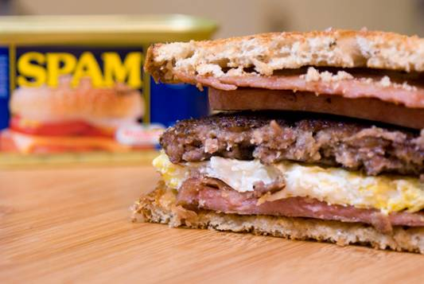

SPAM, Egg, Sausage and SPAM Sandwich

Description:
A tasty SPAM, Egg, Sausage and SPAM sandwich to make Monty Python proud! High in spam, but not as much as SPAM, SPAM, SPAM, SPAM, SPAM, SPAM, Baked Beans, SPAM, SPAM, SPAM and SPAM.
(Recipe courtesy of Uncle Jerry's Kitchen)
Ingredients:
- 1/3 lb. of breakfast sausage
- 1 7-oz. tin SPAM
- 2 eggs
- 2 slices Jewish Rye bread
- 1 tbsp mayonnaise
- 1 tsp. deli style mustard
- Vegetable oil for frying
Instructions:
- Form sausage into a patty large enough to cover the bread. Place in a hot skillet over low heat and cook until no longer pink, approximately 4 minutes per side. Place on a rack set into a baking sheet in an oven set to warm.
- Cut SPAM lengthwise into six even slices. Fry in an ungreased skillet over high heat for approximately 45 seconds per side, or until the outside of the SPAM is well seared. Transfer to rack with sausage.
- Break eggs into a hot skillet over medium low heat. Once whites have begun to set, break the yolks with a fork or spatula and stir eggs once. Cook until eggs are mostly set, flip and cook an additional minute.
- Toast bread, apply condiments to one side. Add one layer of SPAM, the egg, sausage and another layer of SPAM. Top with remaining bread, cut in half and serve.
- Share and enjoy!
Home